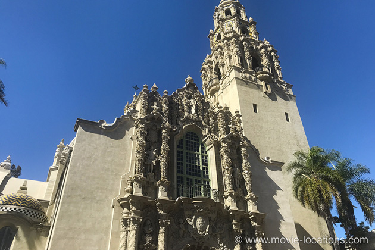
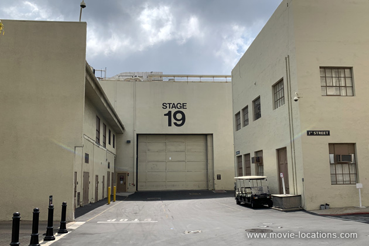
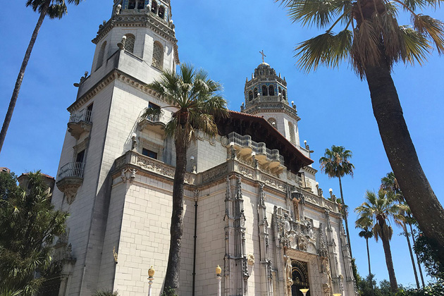
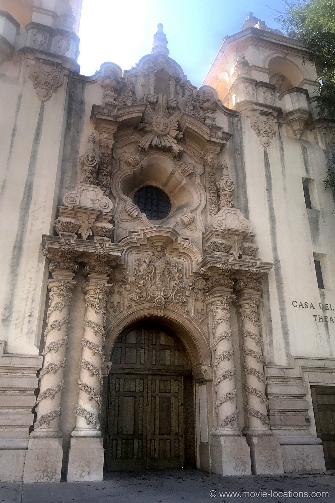
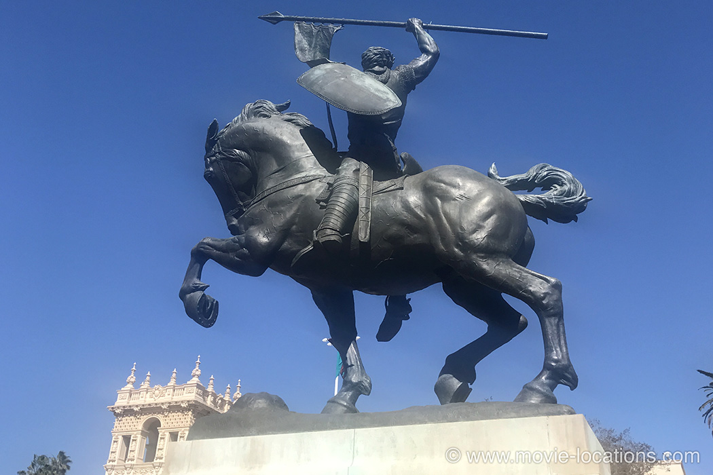

Citizen Kane
Main Content

Discover where Orson Welles's classic film was made in Hollywood and San Diego.
Still a regular favourite in ‘Best Movie of All Time’ lists, even if the top spot is no longer guaranteed, Citizen Kane remains a dazzling debut feature from the 26-year-old stage/radio prodigy Orson Welles.
The film is very much studio-based, mostly made on what is now Stage 19 at Paramount Pictures (the same stage on which much of Ghost was filmed), in Hollywood.
Scenes were also filmed on Stage 32, which had been used for those wonderful Fred Astaire-Ginger Rogers dance movies from the 30s, when this was the old RKO Studio, 780 Gower Street at Melrose Avenue, Hollywood.

The studio, built in 1920 as the Robertson-Cole Studios, bought by Howard Hughes in 1948, and subsequently by Lucille Ball in 1957, has since been incorporated into the Paramount lot alongside on Melrose, but you can’t miss the giant RKO globe built onto the corner of the soundstage on the northwest corner of Gower and Melrose.
You can now tour the lot with the Paramount Pictures Studio Tour, 5515 Melrose Avenue.
Ingeniously making the most of his limited resources, Welles incorporated what had supposedly been ‘film tests’ into the finished movie. Thus, the projection room, where the opening newsreel is shown, was the real RKO projection room (with Joseph Cotten and a then-unknown Alan Ladd among the reporters); Susan Alexander’s nightclub was an old Western movie set; and her attempted suicide had no set at all, just a couple of flats.
For real interest, though, check out Hearst Castle, the original architectural hotchpotch on which Kane’s ‘Xanadu’ was based, in idea if not visually.
Charles Foster Kane was supposedly based on several real-life characters but far and away the closest resemblance is to newspaper tycoon William Randolph Hearst.
In fact, Hearst was so furious about the similarities he pulled all the strings he could (which was a lot) in an attempt to scupper the film and derail Welles’ career.
Hearst’s mistress was not an opera singer but actress Marion Davies, whose Hollywood career he bankrolled. Welles later expressed regret that the film had somewhat maligned Davies.
Hearst Castle was the magnate’s magnificent folly – like the fictional ‘Xanadu’ it’s a hodgepodge of European artefacts and architecture which was overseen by architect Julia Morgan. Morgan was also the designer of the Herald Examiner Building in Downtown Los Angeles which you’ve probably seen in lots of films.
The building was never completed and now never will be. Away from the impressive façade, at the rear of the building, the elaborate decoration and the thin coating of stone runs out to reveal the concrete structure beneath. Just like a movie set, in fact.

Hearst Castle is on Coastal Highway 1, on the central California coast near to San Simeon, just about halfway between Los Angeles and San Francisco. It’s now owned by the state and more properly known as the Hearst State Historical Monument. It’s open to the public for tours every day except Thanksgiving, Christmas Day and New Year’s Day.
Don’t miss it. It’s every bit as fascinating as Kane’s 'Xanadu'. Bizarrely, Hearst Castle’s outdoor swimming pool, with its bits of Greek and Roman temples, is briefly seen as the mansion of Crassus (Laurence Olivier) in 1960's Spartacus, with Kirk Douglas.

The views of ‘Xanadu’ in News on the March, the fake news documentary which introduces the film, are shots of the Casa del Prado complex of buildings in Balboa Park, San Diego.
The 1,200-acre park was opened in 1868 and, in addition to its open green spaces, houses museums, theatres and the famous San Diego Zoo.
Welles chose the most florid encrustations of the Casa del Prado’s Spanish Baroque decoration, a style known as Churrigueresque, to illustrate Kane’s rampant megalomania.
In fact, this complex was initially built for the Panama-California Exposition of 1915 to celebrate the opening of the Panama Canal.

The grounds of 'Xanadu' were filmed in Busch Gardens, Pasadena, an estate built by the Busch brewing family. These vast, landscaped gardens have long since vanished, but portions of the old layout can be glimpsed in back gardens of some of the grand houses in the area.
You can see the remnants of the landscaping in the gardens of properties around Arroyo Boulevard between Bellefontaine Street and Madeline Drive.
Visit Info
Visit The Film Locations
California
Visit: California
Visit: San Diego
Flights: San Diego International Airport, 3225 North Harbor Drive, San Diego, CA 92101 (tel: 619.400.2404)
Visit: Balboa Park, San Diego
Visit: San Simeon
Visit: Hearst Castle, 750 Hearst Castle Road, San Simeon, CA 93452
California | Los Angeles
Visit: Los Angeles
Flights: Los Angeles International Airport (LAX), 1 World Way, Los Angeles, CA 90045 (tel: 424.646.5252)
Travelling around: Los Angeles Metro
Take: the Paramount Pictures Studio Tour, 5515 Melrose Avenue, Los Angeles, CA 90038 (tel: 323.956.1777)